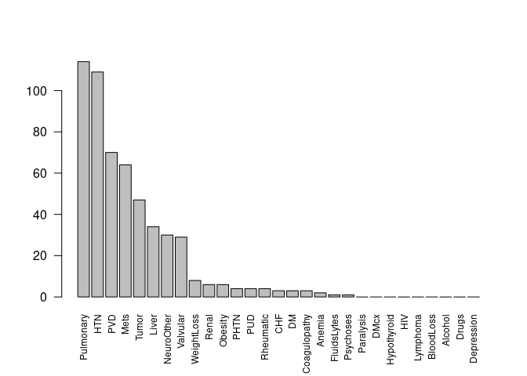

Fast comorbidities from ICD-9 and ICD-10 codes, decoding, manipulation and validation
Introduction
Calculate comorbidities, medical risk scores, and work very quickly and precisely with ICD-9 and ICD-10 codes. This package enables a work flow from raw tables of ICD codes in hospital databases to comorbidities. ICD-9 and ICD-10 comorbidity mappings from Quan (Deyo and Elixhauser versions), Elixhauser and AHRQ included. Common ambiguities and code formats are handled. Comorbidity computation includes Hierarchical Condition Codes, and an implementation of AHRQ Clinical Classifications. Risk scores include those of Charlson and van Walraven. US Clinical Modification, Word Health Organization, Belgian and French ICD-10 codes are supported, most of which are downloaded on demand.
icd is used by many researchers around the world who work in public health, epidemiology, clinical research, nutrition, journalism, health administration and more. I’m grateful for contact from people in these fields for their feedback and code contributions, and I’m pleased to say that icd has been used in works like the Pulitzer finalist work on maternal death by ProPublica.
Features
- find comorbidities of patients based on ICD-9 or ICD-10 codes, e.g. Cancer, Heart Disease
- several standard mappings of ICD codes to comorbidities are included (Quan, Deyo, Elixhauser, AHRQ, PCCC)
- very fast assignment of ICD codes to comorbidities (using novel matrix multiplication algorithm and C++ internally – see ‘efficiency’ vignette for details)
- use your existing wide or long data format, icd can guess which columns are ICD-9 or ICD-10 codes.
- explain and summarize groups of ICD codes in natural language, using ICD editions from the WHO, USA, France and Belgium. Many different annual editions of these data are available, all via the ‘icd.data’ companion package.
- Charlson and Van Walraven score calculations
- Hierarchical Condition Codes (HCC) from CMS
- Clinical Classifications Software (CCS) comorbidities from AHRQ
- Pediatric Complex Chronic Condition comorbidities
- AHRQ ICD-10 procedure code classification
- correct conversion between different representations of ICD codes, with and without a decimal points, leading and trailing characters (this is not trivial for ICD-9-CM). ICD-9 to ICD-10 cross-walk is not yet implemented
- comprehensive test suite to increase confidence in accurate processing of ICD codes
Examples
See also the vignettes and examples embedded in the help for each function for more. Here’s a taste:
# install.packages("icd")
library(icd)
# Typical diagnostic code data, with many-to-many relationship
patient_data
#> visit_id icd9
#> 1 1000 40201
#> 2 1000 2258
#> 3 1000 7208
#> 4 1000 25001
#> 5 1001 34400
#> 6 1001 4011
#> 7 1002 4011
#> 8 1000 <NA>
# get comorbidities using Quan's application of Deyo's Charlson comorbidity groups
comorbid_charlson(patient_data)
#> MI CHF PVD Stroke Dementia Pulmonary Rheumatic PUD LiverMild
#> 1000 FALSE TRUE FALSE FALSE FALSE FALSE FALSE FALSE FALSE
#> 1001 FALSE FALSE FALSE FALSE FALSE FALSE FALSE FALSE FALSE
#> 1002 FALSE FALSE FALSE FALSE FALSE FALSE FALSE FALSE FALSE
#> DM DMcx Paralysis Renal Cancer LiverSevere Mets HIV
#> 1000 TRUE FALSE FALSE FALSE FALSE FALSE FALSE FALSE
#> 1001 FALSE FALSE TRUE FALSE FALSE FALSE FALSE FALSE
#> 1002 FALSE FALSE FALSE FALSE FALSE FALSE FALSE FALSE
# or go straight to the Charlson scores:
charlson(patient_data)
#> 1000 1001 1002
#> 2 2 0
# plot summary of Uranium Cancer Registry sample data using AHRQ comorbidities
plot_comorbid(uranium_pathology)
Comorbodities example: make “Table 1” summary data
A common requirement for medical research involving patients is determining new or existing comorbidities. This is often reported in Table 1 of research papers to demonstrate the similarity or differences of groups of patients. This package is focussed on fast and accurate generation of this comorbidity information from raw lists of ICD-9 and ICD-10 codes.
Here we are using the US National Hospital Discharge Survey 2010 data from the nhds package. For the sake of example, let us compare emergency to other admissions. A real table would have more patient features; this primarily demonstrates how to get ICD codes into your Table 1.
NHDS 2010 comorbidities to demonstrate Table One creation. Presented as counts (percentage prevalence in group).
nhds <- nhds::nhds2010
# get the comorbidities using the Quan-Deyo version of the Charlson categories
cmb <- icd::comorbid_quan_deyo(nhds, abbrev_names = FALSE)
nhds <- cbind(nhds, cmb, stringsAsFactors = FALSE)
Y <- nhds$adm_type == "emergency"
tab_dat <- vapply(
unname(unlist(icd_names_charlson)),
function(x) {
c(sprintf("%i (%.2f%%)",
sum(nhds[Y, x]),
100 * mean(nhds[Y, x])),
sprintf("%i (%.2f%%)",
sum(nhds[!Y, x]),
100 * mean(nhds[!Y, x])))
},
character(2)
)
knitr::kable(t(tab_dat), col.names = c("Emergency", "Not emergency"))| Emergency | Not emergency | |
|---|---|---|
| Myocardial Infarction | 2707 (3.69%) | 1077 (1.38%) |
| Congestive Heart Failure | 12339 (16.84%) | 5628 (7.19%) |
| Periphral Vascular Disease | 3798 (5.18%) | 3042 (3.89%) |
| Cerebrovascular Disease | 5329 (7.27%) | 2748 (3.51%) |
| Dementia | 2175 (2.97%) | 728 (0.93%) |
| Chronic Pulmonary Disease | 11989 (16.36%) | 6762 (8.64%) |
| Connective Tissue Disease-Rheumatic Disease | 1527 (2.08%) | 1131 (1.44%) |
| Peptic Ulcer Disease | 1044 (1.42%) | 473 (0.60%) |
| Mild Liver Disease | 2030 (2.77%) | 1011 (1.29%) |
| Diabetes without complications | 14399 (19.65%) | 9125 (11.66%) |
| Diabetes with complications | 2719 (3.71%) | 1449 (1.85%) |
| Paraplegia and Hemiplegia | 1386 (1.89%) | 852 (1.09%) |
| Renal Disease | 9322 (12.72%) | 4604 (5.88%) |
| Cancer | 2724 (3.72%) | 3496 (4.47%) |
| Moderate or Severe Liver Disease | 893 (1.22%) | 352 (0.45%) |
| Metastatic Carcinoma | 2100 (2.87%) | 1663 (2.12%) |
| HIV/AIDS | 0 (0.00%) | 0 (0.00%) |
How to get help
Look at the help files for details and examples of almost every function in this package. There are several vignettes showing the main features (See list with vignette(package = "icd")):
- Introduction
vignette("introduction", package = "icd") - Charlson scores
vignette("charlson-scores", package = "icd") - Examples using ICD-10 codes
vignette("ICD-10", package = "icd") - CMS Hierarchical Condition Codes (HCC)
vignette("CMS-HCC", package = "icd") - Pediatric Complex Chronic Conditions (PCCC)
vignette("PCCC", package = "icd") - Working with ICD code ranges
vignette("ranges", package = "icd") - Comparing comorbidity maps
vignette("compare-maps", package = "icd") - Paper detailing efficient matrix method of comorbidities
vignette("efficiency", package = "icd")
Many users have emailed me directly for help, and I’ll do what I can, but it is often better to examine or add to the list of issues so we can help each other. Advanced users may look at the source code, particularly the extensive test suite which exercises all the key functions.
ICD-9 codes
ICD-9 codes are still in heavy use around the world, particularly in the USA where the ICD-9-CM (Clinical Modification) was in widespread use until the end of 2015. ICD-10 has been used worldwide for reporting cause of death for more than a decade, and ICD-11 is due to be released in 2019. ICD-10-CM is now the primary coding scheme for US hospital admission and discharge diagnoses used for regulatory purposes and billing. A vast amount of electronic patient data is recorded with ICD-9 codes of some kind: this package enables their use in R alongside ICD-10.
ICD-9 codes are not numbers, and great care is needed when matching individual codes and ranges of codes. It is easy to make mistakes, hence the need for this package. ICD-9 codes can be presented in short 5 character format, or decimal format, with a decimal place separating the code into two groups. There are also codes beginning with V and E which have different validation rules. Zeroes after a decimal place are meaningful, so numeric ICD-9 codes cannot be used in most cases. In addition, most clinical databases contain invalid codes, and even decimal and non-decimal format codes in different places. This package primarily deals with ICD-9-CM (Clinical Modification) codes, but should be applicable or easily extendable to the original WHO ICD-9 system.
ICD-10 codes
ICD-10 has a somewhat simpler format, with consistent use of a letter, then two alphanumeric characters. However, especially for ICD-10-CM, there are a multitude of qualifiers, e.g. specifying recurrence, laterality, which vastly increase the number of possible codes. This package recognizes validity of codes by syntax alone, or whether the codes appear in a canonical list. The current ICD-10-CM master list is the 2016 set. There is not yet the capability of converting between ICD-9 and ICD-10, but comorbidities can be generated from older ICD-9 codes and newer ICD-10 codes in parallel, and the comorbidities can then be compared.